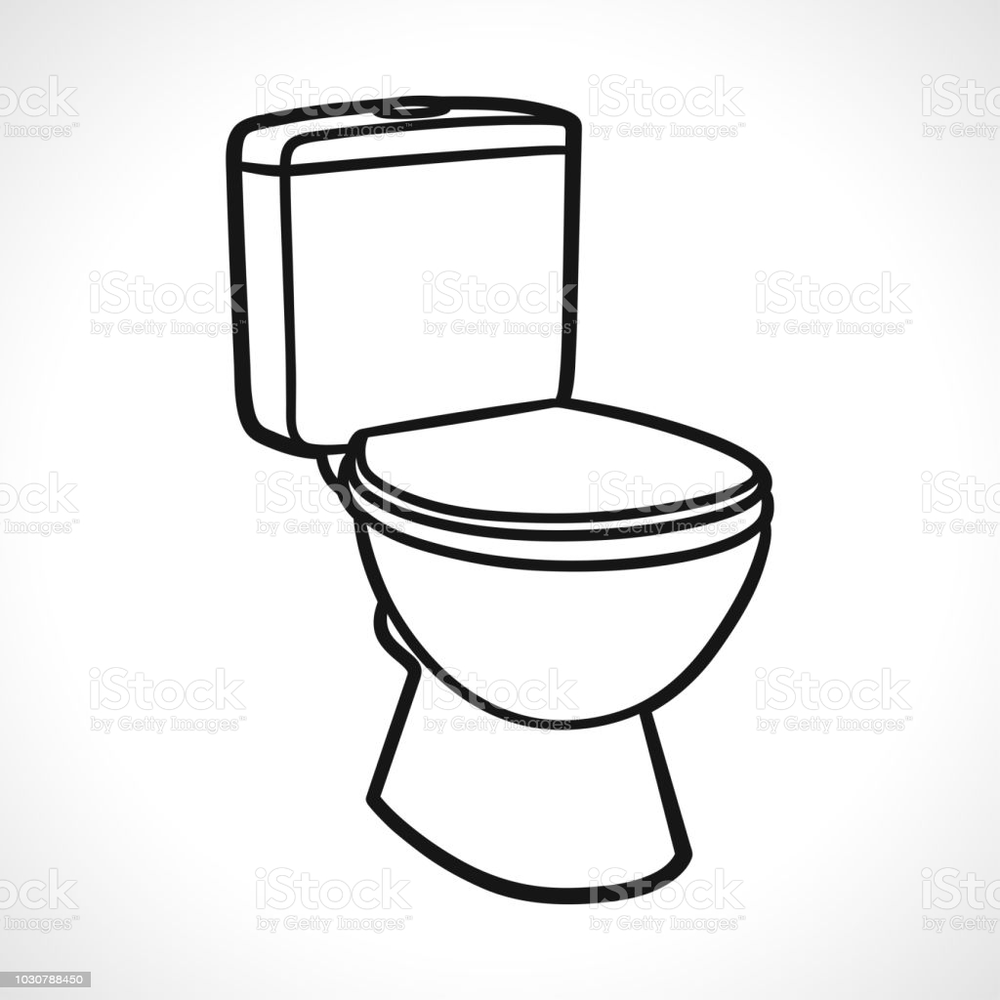

<!DOCTYPE html>
<html lang="en"></html>
<link>
    <meta charset="UTF-8">
    <meta http-equiv="X-UA-Compatible" content="IE=edge">
    <meta name="viewport" content="width=device-width, initial-scale=1.0">
    <link rel="stylesheet" href="styles.css"></link>
    <script src="https://cdn.freecodecamp.org/testable-projects-fcc/v1/bundle.js" defer> </script>
    <title>Document</title>
</head>
<body>
    <div id="fcc_test_suite_wrapper" style="position: relative !important; z-index: 99999 !important;"></div>
       <main id="main-do">
           <h1 style="font-size: sans-serif; font-weight: 600; font-size: 50px; text-decoration: underline; margin: 0;">
            <span style='font-size:100px;'>Toilets&#128701;</span>
           </h1>
              <iframe width="1250" height="685" src="https://www.youtube.com/embed/eU2gbB1e8G8" title="YouTube video player" frameborder="0" allow="accelerometer;  clipboard-write; encrypted-media; gyroscope; picture-in-picture" allowfullscreen></iframe>
        <nav id="navbar">
            <header id="nav-header"><h1 style="color: red; font-size: 200%;" href="#navbar"> </h1></header>
            <div><span style="font-size: 30px;">Menu</span>
                         <ul class="first-ul">
                            <li><a href="#The_imporance_of_toilets"  class="nav-link bottom">The imporance of toilets</a></li> 
                            <li><a href="#The_three_types_of_toilets" class="nav-link">The three types of toilets</a></li>
                            <li><a href="#Fun_facts_about_toilets" class="nav-link top">Fun facts about toilets</a></li>
                            <li><a href="#So_why_are_toilets_so_expensive?" class="nav-link top">So why are toilets so expensive?</a></li>
                            <li><a href="#The_Sources_this_information" class="nav-link top">The Sources this information</a></li>
                       </ul>
            </div>
        </nav >
        
        <section id="The_imporance_of_toilets" class="main-section second-headlines">
            <header  class="section-topic"><h1>The imporance of toilets</h1></header>
            <p>Toilets are crucial for the healthy development of people, not to mention children. </p>
            <p>So is sanitation – facilities and services for safe disposal of human urine and feces includes maintaining hygiene through services such as garbage collection and wastewater disposal.</p>
            <p></p>
            <p></p>
            <p></p>
            <p></p>
            <p></p>
            <p></p>
            <p></p>
            <p></p>

        </section>

            <figcaption><figure style="color: white;">Bonus part-</img></figure></figcaption> 
    
            <h1><a style="text-align: left; color: red; font-size: 200%;" href="#navbar">Click back to Menu</a></h1>

        <section id="The_three_types_of_toilets" class="main-section second-headlines">
            <header  class="section-topic"><h1>The three types of toilets</h1></header>
            <p>When we talk about toilet type, we mean the basic method that the toilet uses to flush and dispose of waste.</p>
            <p>From there, you will choose the best style and flushing technology that fits your overall design.</p>
            <p>Let's look at the three main toilet types: gravity-feed, pressure-assisted, double-cyclone, and waterless.</p>
            <code></code>
            <code></code>
            <code></code>
            <code></code>
            <code></code>


        </section>
        <section id="Fun_facts_about_toilets" class="main-section second-headlines">
            <header  class="section-topic"><h1>Fun facts about toilets</h1></header>
            <ul>
                <li>Fast forward to today: around 60% of the world – 4.5 billion people – don't have a toilet that safely manages human waste at home.</li>
                <li>Would you show up if there were no toilets at your school? Globally, 1 in 3 schools do not have adequate toilets, and 23% of schools have no toilets at all.</li>
                <li>Schools without toilets can cause girls to miss out on their education. Without proper sanitation facilities, many are forced to miss school when they’re on their period.</li>
                <li>Toilets are a great investment. Every dollar spent on sanitation has a return of US$5.50, according to WHO research.</li>    
                <li>But still, 892 million people worldwide practise open defecation, meaning they go outside – on the side of the road, in bushes or rubbish heaps.</li>
                <li>Toilets save lives! Without toilets, deadly diseases spread rapidly. Over 750 children under five die every day from diarrhoea caused by unsafe water, sanitation, and poor hygiene.</li>
                <li>t’s time to make a stink! In order to get everyone in the world using toilets, we need to triple our current efforts. That doesn’t just mean more toilets, but creating the desire for people to use them.</li>
                <li>NASA invested more than $20 million in a suction-style toilet for the International Space Station.</li>
                <li>In 1890, the Scot Paper Company became the first manufacturer to use a roll for toilet paper.</li>
            </ul>

        </section>

        <h1><a style="text-align: left; color: red; font-size: 200%;" href="#navbar">Click back to Menu</a></h1>

        <section id="So_why_are_toilets_so_expensive?" class="main-section second-headlines">
            <header  class="section-topic"><h1>So why are toilets so expensive?</h1></header>
            <p>Toilet design is the main factor in determining why some toilets cost more than others.</p>
            <p> Generally speaking, one-piece, wall hung toilets tend to be more expensive than alternative styles.</p>
            <p> They incorporate a slick, sleeker appearance than their counterparts, and feature less crevices which makes them easier to clean.</p>
            <p>Toilet design is the main factor in determining why some toilets cost more than others.</p>
            <p>Generally speaking, one-piece, wall hung toilets tend to be more expensive than alternative styles. </p>
            <p>They incorporate a slick, sleeker appearance than their counterparts, and feature less crevices which makes them easier to clean.</p>
            <p>Two-piece, traditional toilets are the most common design available, and usually the most competitively priced in turn.</p>          

        </section>

        <section id="The_Sources_this_information" class="main-section second-headlines">
            <header class="section-topic"><h1>The Sources this information</h1></header>
            <h2>For more information about toilets click <a style="color: yellow;" id="wiki" href="https://en.wikipedia.org/wiki/Toilet">here</a></h2>
        </section>
    
       </main>
</body>
</html>